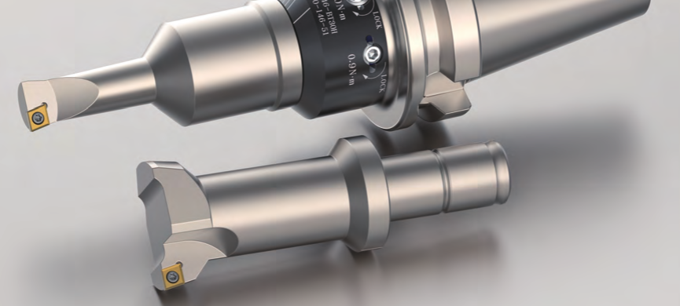

NINEBORE · BORING TOOL FINDER
Find the bar. Match the clamping. Get the cutting values for your setup.

Loading NineBore catalog…
01 / DEFINE THE JOB
Your required finished diameter.
Tolerance optional · upper / lower
Depth to bore below the work surface.
Used to match insert grade and cutting data.
Example job · adjust the four inputs to suit your workpiece.
02 / CHOOSE YOUR BAR
Swipe sideways to view the full drawing.
Dimensions in mm. The catalog outline is not to scale.